Wie löse ich Matheaufgaben?
Volumen
Sie sehen ein gelbes Eingabefeld und die
Schalter: Prüfen und Lösung.
Tragen Sie Ihr Ergebnis ein, prüfen Sie es
oder starten Sie eine Lösung.
Aufgabe 1
Welches Volumen V und welche Oberfläche O hat ein Würfel mit der Seitenlänge a = 3 cm?
Aufgabe 1
Welche Seitenlänge a hat ein Würfel
a) mit dem Volumen V = 64 cm3? b) mit der Oberfläche = 150 cm2? b) a = cmAufgabe 3
Ein Prisma hat einen Umfang U der Grundfläche von 56,8 dm,eine Höhe h von 9,5 dm und eine Grundf- läche G von 94,5 dm2. Wie groß sind die Mantelfläche M und die Oberfläche O?
Aufgabe 4
Ein Prisma hat eine Grundfläche G von 63,8 cm2, eine Höhe h von 22,5 cm und eine Mantelfläche M von 518,75 cm2. Wie groß sind die Oberfläche O und der Umfang U der Grundfläche?
U = cmAufgabe 5
Ein Prisma hat eine Oberfläche O von 54,63 cm2, eine Mantelfläche M von 36,83 cm2 und einen Umfang U der Grundfläche von 6,35 cm. Wie groß sind die Grundläche G und die Höhe h?
Aufgabe 6
Ein Prisma hat eine Oberfläche O von 1225 cm2, eine Höhe h von 23 cm und einen Umfang U der Grundfläche von 42 cm. Wie groß sind die Grundläche G und die Mantelfläche M?
M = cm2Aufgabe 7
Berechnen Sie das Volumen V des dargestellten Prismas.
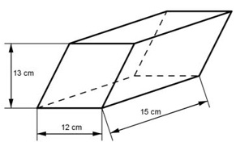
Aufgabe 8
Berechnen Sie das Volumen V des dargestellten Prismas.
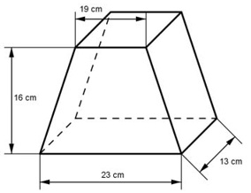
V = cm3Aufgabe 9
Berechnen Sie die Höhe h eines Prismas mit dem Volumen V = 180,7 dm3 und einer Grundfläche G = 27,8 dm2.
Aufgabe 10
Berechnen Sie das Volumen V eines Prismas
(Quaders) mit der Länge a = 4 cm, der Breite
b = 3 cm und der Höhe h = 70 mm.
Aufgabe 11
Berechnen Sie das Volumen V eines Prismas
(Quaders) mit der Länge
a = 15 cm, der Breite
b = 85 cm und der Höhe h = 9 dm.
Aufgabe 12
Berechnen Sie das Volumen V eines Prismas
(Quaders)mit der Länge
a = 2,7 dm, der Breite
b = 9,3 cm und der Höhe h = 85 mm.
Aufgabe 13
Berechnen Sie das Volumen V eines Dreieckprismas
mit der Gesamtlänge
l = 5,3 cm, der Grundseite
des Dreiecks a = 60 mm und der Höhe des Dreiecks
h = 1,7 cm.
Aufgabe 14
Berechnen Sie das Volumen V eines rechtwinkligen
Dreieckprismas mit der Gesamtlänge l = 5,3 cm und
der Länge der Katheten a = 45 mm und
b = 2,5 cm.
Aufgabe 15
Berechnen Sie die Oberfläche O eines rechtwink-
ligen Dreieckprismas mit der Gesamtlänge
l = 4 cm
und der Länge der Katheten a und
b = 2,5 cm.
Aufgabe 16
Berechnen Sie das Volumen V des dargestellten Körpers.
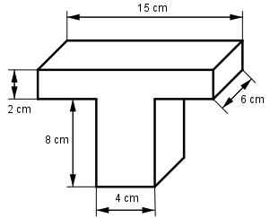
V = cm3Aufgabe 17
Berechnen Sie das Volumen V des dargestellten Körpers.
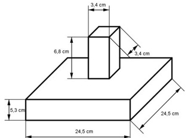
Aufgabe 18
Berechnen Sie das Volumen V des dargestellten Körpers.
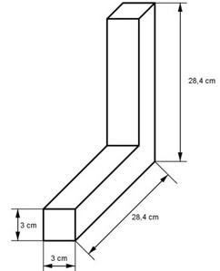
V = cm3Aufgabe 19
Berechnen Sie das Volumen V des dargestellten Körpers.
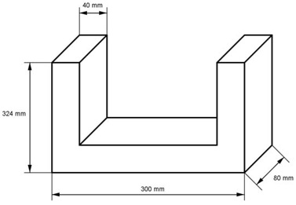
Aufgabe 20
Berechnen Sie das Volumen V des dargestellten Körpers.
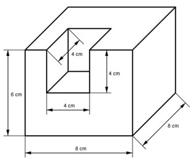
V = dm3Aufgabe 21
Berechnen Sie das Volumen V des dargestellten Körpers.
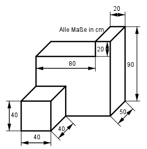
Aufgabe 22
Ein Zylinder hat einen Radius r von 2 m und eine Höhe h von 3 cm. Wie groß ist sein Volumen V?
V = cm3Aufgabe 23
Ein Zylinder hat einen Durchmesser d von
4,8 cm
und eine Höhe h von
5 cm. Wie groß ist sein
Volumen V?
Aufgabe 24
Ein Zylinder hat einen Grundfläche G von 70 cm2
und eine Höhe h von
8 cm. Wie groß ist
Aufgabe 25
Berechnen Sie das Volumen V des dargestellten Körpers.
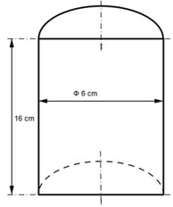
Aufgabe 26
Berechnen Sie das Volumen V des dargestellten Körpers.
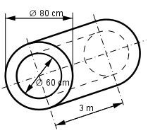
V = cm3Aufgabe 27
Berechnen Sie das Volumen V und die Oberfläche O des dargestellten Körpers.
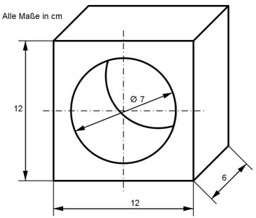
Aufgabe 28
Berechnen Sie das Volumen V des dargestellten Körpers.
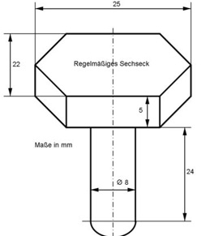
V = mm3Aufgabe 29
Berechnen Sie die Oberfläche O eines quadratischen
Prismas mit einer Grundfläche
G = 25 cm2 und
einer Länge l von 13 cm.
Aufgabe 30
Ein Würfel hat eine Gesamtseitenlänge L von
72 cm.
Wie groß sind sein Volumen V und seine
Oberfläche O?
Aufgabe 31
Ein Prisma hat eine quadratische Grundfläche mit
einem Umfang von
12 cm und einer Höhe von 8 cm.
Wie groß sind sein Volumen V und seine
Oberfläche O?
Aufgabe 32
Berechnen Sie die Masse m eines Zylinders mit
r = 2 cm,h = 15 cm und
ρ = 7,85 g/cm3.
Aufgabe 33
Berechnen Sie die Masse m eines Zylinders mit r = 7,5 cm, h = 65 cm und ρ = 2,7 kg/dm3.
Aufgabe 34
Berechnen Sie die Masse m eines Zylinders mit d = 12 mm,h = 27 mm und ρ = 10,5 kg/dm3.
m = kgAufgabe 35
Berechnen Sie die Masse m eines Zylinders mit
d = 1,4 m,h = 8,6 m und
ρ = 2,4 t/m3.
Aufgabe 36
Ein Zylinder hat ein Volumen V von 200 cm3 und eine Höhe h von 5 cm. Wie groß ist sein Radius r?
r = cmAufgabe 37
Ein Zylinder hat ein Volumen V von 176 cm3 und
einen Radius r von
4,5 cm.
Wie groß ist seine Höhe h?
Aufgabe 38
Ein Zylinder hat eine Mantelfläche M von
83,9 cm2 und einen Radius r von 3,8 cm.
Wie groß sind seine Höhe h und sein Volumen V?
Aufgabe 39
Ein Zylinder hat eine Mantelfläche M von
246,8 cm2 und eine Höhe h von 27 cm.
Wie groß sind seine Oberfläche O und sein
Volumen V?
Aufgabe 40
Berechnen Sie das Volumen V und die Oberfläche O des dargestellten Körpers.
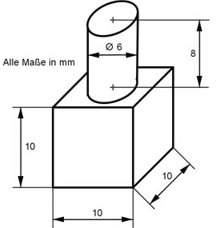
V = mm3Aufgabe 41
Berechnen Sie das Volumen V und die Oberfläche O des dargestellten Körpers.
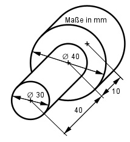
Aufgabe 42
Berechnen Sie die Masse m des Körpers mit einer Dichte ρ von 8,9 g/cm3.
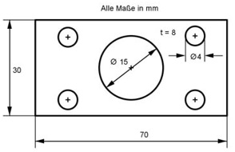
m = gAufgabe 43
Berechnen Sie die Masse m des Körpers mit einer
Dichte ρ von
2,7 kg/dm3.
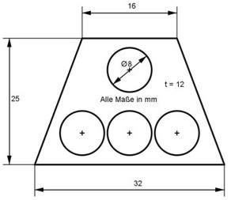
Aufgabe 44
Berechnen Sie die Masse m des Körpers mit einer Dichte ρ von 7,8 g/cm3.
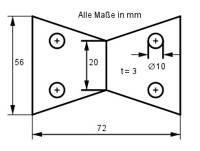
m = gAufgabe 45
Ein Zylinder hat einen Radius r von 4 cm und eine Höhe h von 6 cm. Wie groß ist seine Oberfläche O?
Aufgabe 46
Ein Zylinder hat ein Volumen V von 17 cm3 und einen Radius r von 2 cm. Wie groß sind seine Oberfläche O und seine Mantelfläche M?
M = cm2Aufgabe 47
Ein Zylinder hat ein Volumen V von 70 cm3 und eine Höhe h von 5 cm. Wie groß sind seine Oberfläche O und seine Mantelfläche M?
Aufgabe 48
Ein Zylinder hat eine Oberfläche O von 91 m2 und einen Radius r von 3 m. Wie groß sind seine Mantelfläche M und sein Volumen V?
V = m3Aufgabe 49
Berechnen Sie das Volumen V und die Oberfläche O des dargestellten Körpers.
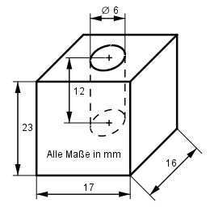
Aufgabe 50
Berechnen Sie das Volumen V und die Oberfläche O des dargestellten Körpers.
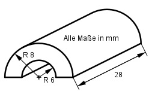
O = mm2Aufgabe 51
Berechnen Sie das Volumen V eines Prismas mit einer Höhe h von 5 cm und einem gleichseitigen Dreieck mit einer Seitenlänge a von 4 cm als Grundfläche.
Aufgabe 52
Berechnen Sie das Volumen V eines Prismas mit einer Höhe h von 5 cm und einem regelmäßigen Sechseck mit einer Seitenlänge a von 3 cm als Grundfläche.
V = cm3Aufgabe 53
Berechnen Sie das Volumen V eines Prismas mit einer Höhe h von 5 cm und einem regelmäßigen Achteck mit einer Seitenlänge a von 2,5 cm als Grundfläche.
Aufgabe 54
Berechnen Sie das Volumen V eines Prismas mit einer Höhe h von 5 cm und einem regelmäßigen Fünfeck mit einer Seitenlänge a von 3,2 cm als Grundfläche.
V = cm3Aufgabe 55
Berechnen Sie das Volumen V und die Oberfläche O des dargestellten Prismas.
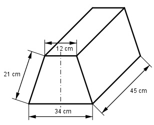
Aufgabe 56
Berechnen Sie das Volumen V und die Oberfläche O des dargestellten Körpers.
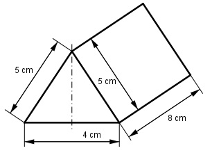
O = cm2Aufgabe 57
Ein Zylinder hat einen Umfang U von 46,8 cm und
eine Höheh von
12,3 cm. Wie groß sind seine
Oberfläche O und seine Mantelfläche M?
Aufgabe 58
Ein Zylinder hat ein Volumen V von 15,7 dm3. Seine Höhe h und der Radius r stehen im Verhältnis 5 : 2. Wie groß sind seine Höhe h und seine Oberfläche O?
h = dmAufgabe 59
Ein Zylinder hat eine Oberfläche O von 356 cm3. Seine Höhe h und der Radius r stehen im Verhältnis 5 : 3. Wie groß ist sein Volumen V?
Aufgabe 60
Ein Würfel hat eine Masse von 655 g und eine Dichte von 7,85 g/cm3. Wie groß ist eine Seite a?
a = cmAufgabe 61
Wie groß ist die Masse m des dargestellten
Körpers, wenn seine Dichte
7,1 g/cm3 beträgt?
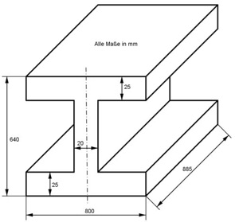
Aufgabe 62
Berechnen Sie das Volumen V und die Oberfläche O desdargestellten symmetrischen Körpers. Alle Maße in mm.
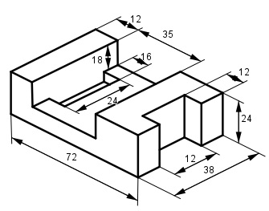
O = cm2Aufgabe 63
Die Seiten eines Rechteckprismas (Quaders)
verhalten sich wie
a : b : c = 1 : 3 : 5..
Wie groß sind sein Volumen V und seine
Oberfläche O, wenn b = 18 cm lang ist?
Aufgabe 64
Ein Quader hat eine Seite mit 5 cm und eine andere mit 2 cm. Wie groß muss die dritte Seite c sein, wenn die Oberfläche des Quaders gleich groß sein soll wie die Oberfläche eines Würfels mit einer Seitenlänge von 5 cm?
Sie muss cm lang sein.Aufgabe 65
Ein quadratisches Prisma hat eine Seite von
36 cm
und eine Länge von
62 cm. Ein Rechteckprisma soll
gleiches Volumen und gleiche Länge haben.
Wie lang ist die andere Rechteckseite, wenn die
eine 5,5 cm lang ist?
Aufgabe 66
Rechteckprisma hat die Maße
28 x 24 x 140 mm.
Ein quadratisches Prisma soll gleiches Volumen
und gleiche Länge haben.
Wie lang ist eine Quadratseite?
Aufgabe 67
Ein regelmäßiges dreiseitiges Prisma hat eine Oberfläche O von 20 cm2 und eine Seitenlänge a von 2 cm. Wie groß ist seine Länge l?
Aufgabe 68
Ein Zylinder hat ein Volumen V von 100 cm3 und eine Höhe h von 5 cm. Wie groß ist sein Durchmesser d?
d = cmAufgabe 69
Ein Zylinder wird in der Mitte der Länge nach durchgeschnitten. Die Schnittfläche ist ein Quadrat mit der Seite a = 4 cm. Wie groß sind das Volumen V und die Oberfläche O des Zylinders?
Aufgabe 70
Der Radius r und die Höhe h eines Zylinders
verhalten sich wie 3 : 5. Wie groß sind das
Volumen V und die Mantelfläche M, wenn
r = 2 cm?
Aufgabe 71
Wie groß ist das Volumen V eines Zylinders,
wenn seine Mantelfläche
M = 100 cm2 und seine
Höhe h = 10 cm betragen?
Aufgabe 72
Ein Zylinder hat einen Radius r₁ von 5 cm und eine Höhe h1 von 8 cm. Er soll einem zweiten volumengleich sein, dessen Radius r2 und Höhe h2 sich wie 3 : 5 verhalten. Wie groß sind r2 und h2?
h2 = cmAufgabe 73
Das Volumen eines Hohlzylinders ist so groß wie sein Innenvolumen. Drücken Sie den Außenradius r1 durch den Innenradius r2 aus.
Aufgabe 74
Das Volumen eines Hohlzylinders ist so groß wie sein Innenvolumen. Drücken Sie die Mantelfläche des Hohlzylinders M1 durch die Mantelfläche innen M2 aus.
M1 = M2 * (√2 + )Aufgabe 75
Ein Hohlzylinder hat ein Volumen V von 20 cm3, eine Mantelfläche M von 40 cm2 und eine Höhe h von 4 cm. Wie groß sind sein Außenradius r1 und sein Innenradius r2?
Aufgabe 76
Ein Hohlzylinder hat einen Außenradius r1 von
3 cm und einen Innenradius r2 von 2 cm.
Wie groß ist der Radius r eines Zylinders mit
gleichen Volumen und gleicher Höhe?
Aufgabe 77
Die Radien r1 und r2 eines Hohlzylinders
verhalten sich wie 4 : 3. Wie groß sind sein
Volumen V und die Mantelfläche M, wenn
r1 = 4 cm
und die Höhe h = 6 cm?
zurück